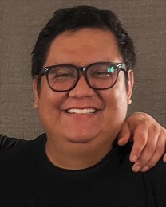

Garrett Curley | WDD 130
Hello! My name is Garrett Curley and I am from Gallup, NM. I currently live in western North Carolina, in a town called Hendersonville. My major is applied technology with an emphasis in programming. I currently work at Apple but recently got back to school to try and finish my degree. I originally got into tech because of a desire to learn how to code but with A.I. being more of a thing, I am a little hesistant to devote all of schooling to programming. I have since learned that I am extremely interested in learning more about cybersecurity but BYU-I does not offer that as a major for remote learning.
I am married to my beautiful wife, Jenny. We met when she was going to school at BYU. We have four children. Our oldest is Bennett, he is 11. Next is Eloise, who is 10. And our twins; Vera and Ewan are 6. We also have a dog named Chad Ochocino but we call him Cinco for short.
Some things I enjoy are watching films, participating in Karaoke, going to concerts, and one talent I have is I can play the ukulele.